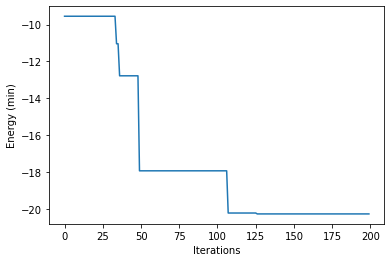
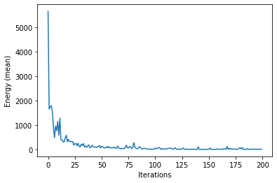
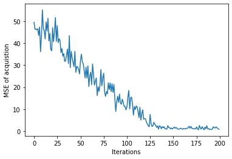
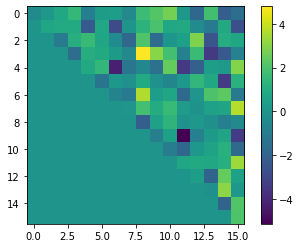
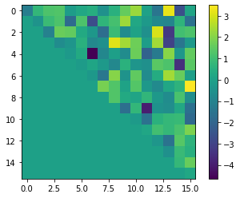

Bayesian Optimization of Combinatorial Structures¶
Reference: https://altema.is.tohoku.ac.jp/QA4U/
Black-Box function¶
import numpy as np
import dimod
class QUBOBlackBox:
def __init__(self, num_variables):
qubo = np.random.normal(size=(num_variables, num_variables))
self.bqm = dimod.BQM(qubo, 'BINARY')
def __call__(self, x):
if len(np.array(x).shape) == 1:
return self.bqm.energy(x)
else:
return self.bqm.energies(x)
class PolyBlackBox:
def __init__(self, num_variables, degrees=3):
poly = {key: np.random.normal()
for key in combinations(range(num_variables), degrees)}
self.bpm = dimod.BinaryPolynomial(poly, 'BINARY')
def __call__(self, x):
if len(np.array(x).shape) == 1:
return self.bpm.energy(x)
else:
return self.bpm.energies(x)
def my_black_box(x):
energy = 0
return energy
from itertools import combinations
num_variables = 16
blackbox = QUBOBlackBox(num_variables)
# blackbox = PolyBlackBox(num_variables)
# blackbox = my_black_box
Initial data¶
def quadratic_feature(x):
num_variables = len(x)
features = [1] + list(x)
for k in range(num_variables - 1):
for l in range(k + 1, num_variables):
features.append(x[k] * x[l])
return np.array(features)
def generate_init_data(blackbox, num_variables, num_init_data):
X_init, y_init = [], []
for k in range(num_init_data):
x = np.random.choice([0, 1], num_variables)
y = blackbox(x)
X_init.append(quadratic_feature(x))
y_init.append(y)
return np.array(X_init), np.array(y_init)
X, y = generate_init_data(blackbox, num_variables, num_init_data=5)
Acquisition function with QUBO¶
def acquisitions_to_bqm(acquisitions, num_variables):
qubo = np.diag(acquisitions[1: num_variables + 1]) # 0: const
n = 0
for k in range(num_variables - 1):
for l in range(k + 1, num_variables):
qubo[k, l] = acquisitions[num_variables + 1 + n]
n += 1
return dimod.BQM(qubo, 'BINARY')
def fit_acquisitions(X, y, lam=0.01):
XX_lamI_inv = np.linalg.inv(np.dot(X.T, X) + lam * np.eye(X.shape[1]))
avg = np.dot(XX_lamI_inv, np.dot(X.T, y))
var = 0.5 * XX_lamI_inv
return np.random.multivariate_normal(avg, var)
Search by annealing¶
from neal import SimulatedAnnealingSampler
from tqdm import tqdm
sampler = SimulatedAnnealingSampler()
sampling_params = dict(num_reads=10, num_sweeps=1000)
y_min_hists = []
energy_mean_hists = []
similarity_hists = [] # only QUBOBlackBox
num_iters = 200
for _ in tqdm(np.arange(num_iters)):
acquisitions = fit_acquisitions(X, y)
bqm = acquisitions_to_bqm(acquisitions, num_variables)
sampleset = sampler.sample(bqm, **sampling_params)
x_new = sampleset.lowest().record[0].sample
y_new = blackbox(x_new)
y_min_hists.append(min(y_new, np.min(y)))
X = np.vstack([X, quadratic_feature(x_new)])
y = np.append(y, y_new)
energy_mean = np.mean((bqm.energies(X[:, 1: num_variables + 1]) - blackbox(X[:, 1: num_variables + 1]))**2)
energy_mean_hists.append(energy_mean)
# only QUBOBlackBox
similarity = np.sum((bqm.to_numpy_matrix() - blackbox.bqm.to_numpy_matrix())**2) / X.shape[1]
similarity_hists.append(similarity)
100%|██████████| 200/200 [00:02<00:00, 77.19it/s]
import matplotlib.pyplot as plt
plt.plot(y_min_hists)
plt.xlabel('Iterations')
plt.ylabel('Energy (min)')
plt.show()

plt.plot(energy_mean_hists)
plt.xlabel('Iterations')
plt.ylabel('Energy (mean)')
plt.show()

plt.plot(similarity_hists)
plt.xlabel('Iterations')
plt.ylabel('MSE of acquistion')
plt.show()

plt.imshow(bqm.to_numpy_matrix().astype(float))
plt.colorbar()
plt.show()
plt.imshow(blackbox.bqm.to_numpy_matrix().astype(float))
plt.colorbar()
plt.show()

